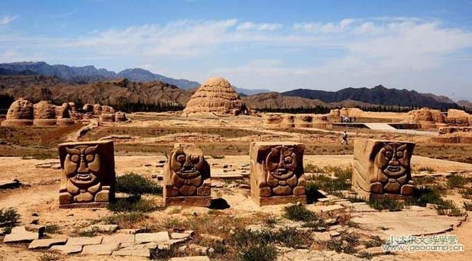

宁夏风光
NING XIA FENG GUANG
欢迎光临我的网站！ |
 |
|
|
.jpg) |
西夏王陵位于宁夏银川市西约30公里的贺兰山东麓。是西夏王朝的皇家陵寝，在方圆53平方公里的陵区内，分布着九座帝陵，253 座陪葬墓，是中国现存规模最大、地面遗址最完整的帝王陵园之一。 1988年被国务院公布为全国重点文物保护单位、国家重点风景名胜区。被世人誉为“神秘的奇迹”、“东方金字塔”.贺兰山东麓，东西约五公里，南北约十公里，在50余平方公里的范围内随着岗丘垄阜的自然起落，布列着9座帝王陵墓和200多座王侯勋戚的陪葬墓。一座座黄色的陵台，高大得像一座座小山丘，在贺兰山下连绵展开，在阳光照映下，金光灿烂，十分壮观。 |
|  |
西夏王陵每座帝陵陵园均是一个完整的建筑群体，占地面积在10万平方米以上，坐北朝南，平地起建。在中国古代传统陵园建筑中陵台一般为土冢，起封土作用，位墓室之上。但西夏陵台建在墓室北10米处，不具封土作用，其形状呈八边七级、五级、九级塔式，底层略高，往上层层收分，是塔式陵台，为夯土实心砖木混合密檐式结构，且偏离中轴线矗立，这在中国建筑史上无前例，是党项族的创造。 |
|
遗址内广场、道路、院落、水井和房屋等遗迹都清晰可见，布局十分规范整齐，总面积近10万平方米。四周筑有夯土城墙。城内分前、中、后三个部分，中部和后部的正中各有一座规模宏大的殿堂，其他建筑多集中在城的前部和中部，并组成一座座封闭式庭院。遗址中发掘出大批色泽鲜艳的绿色琉璃板瓦、筒瓦、瓦当、滴水、脊兽、鸱吻和其他建筑装饰构件，如乳白色或青白色带有冰裂纹的小白瓷板瓦、侧边有黑色釉的牛郎合瓦、精雕细琢的石刻。 |
网站制作：马宁
本站只为介绍宁夏的美丽风光而创建，部分内容采集自互联网，版权归原作者所有
作者联系方式 E-mail: QQ: |